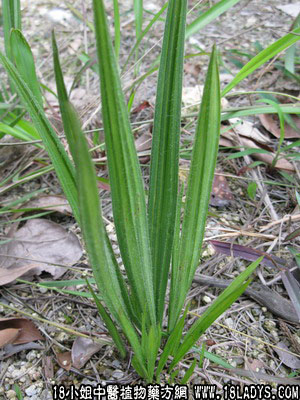

独脚仙茅(中草药名称:仙茅)(科目:仙茅科)

古籍名：仙茅《开宝本草》
别名：仙茅、蟠龙草。
植物名：仙茅。
生长环境：本品为多年生无益草本，生于山野间。
分布：印度、爪哇、菲律宾，我国南部亦有分布。
入药部分：根。
采集期：全年。
自采地点：山岗。
性味：性温、味微甘辛、有小毒。
功能：益肾、扶无阳、补命门肾火、壮阳不倦、利尿、开胃消食、明耳目。
主治、用量、用法：①肾亏：干用1至2两，清水煎服，或加猪瘦肉同煎；②腰刺：干用1至2两，猪腰一只，清水煎服；③尿后返滴：干用1至2两，清水煎服；④久流虚浊：干用1至2两，猪瘦肉适量，清水煎服；⑤手足麻痹不仁：干用1至2两，清水五碗，煎成一碗半，加酒适量，炖鸡肉服食；⑥脚软无力：干用1至2两，鸡脚4至8对，清水煎服。
（方歌）独脚仙茅功用多，腰刺脚软步蹉跎，久流虚浊肾亏损，麻痹不仁皆可瘥。
参考资料：《中国药用植物图鉴》民间用治风湿、腰脊冷痛。现用“二仙汤”的主药，用治高血压。单疗治痈疽结毒，漫肿无头（水煎掺水酒服，或用新鲜品捣烂敷。《滇南本草》方）。
《江西中医药》（1960.7）以鹿衔草、仙茅为主、治疗小儿麻痹后遗症16例，疗效很高。
上海市卫生局《中医研究工作资料汇编第一辑》上海市立第三人民医院报告妇女高血压病的特效方：“二仙汤”和臭梧桐、蛇根草、牡丹皮作为分组治疗比较：